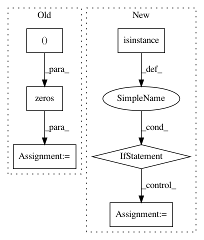

b12d2e08c429ee2c2d4ffa26dc1fca178a06853e,batchflow/models/torch/base.py,TorchModel,get_gradcam,#TorchModel#,1451
Before Change
prediction = self.model(inputs)
if self.classes:
gradient = torch.zeros((1, self.classes), dtype=prediction.dtype, device=self.device)
cam_class = cam_class or np.argmax(prediction.detach().cpu().numpy()[0])
gradient[0][cam_class] = 1
else:
gradient = prediction.clone()
After Change
self.model.eval()
prediction = self.model(inputs)
if isinstance(gradient_mode, np.ndarray):
gradient = self._fill_value(gradient_mode)
elif "oh" in gradient_mode:
gradient = torch.zeros_like(prediction)[0:1]
cam_class = cam_class or np.argmax(prediction.detach().cpu().numpy()[0])
gradient[0][cam_class] = 1
else:
gradient = prediction.clone()
self.model.zero_grad()
prediction.backward(gradient=gradient, retain_graph=True)
self.model.zero_grad()
In pattern: SUPERPATTERN
Frequency: 3
Non-data size: 6
Instances
Project Name: analysiscenter/batchflow
Commit Name: b12d2e08c429ee2c2d4ffa26dc1fca178a06853e
Time: 2020-10-22
Author: Tsimfer.SA@gazprom-neft.ru
File Name: batchflow/models/torch/base.py
Class Name: TorchModel
Method Name: get_gradcam
Project Name: biotite-dev/biotite
Commit Name: 03bcba72606f89b94a2a2f8d845b94eb71cd785f
Time: 2017-09-27
Author: patrick.kunzm@gmail.com
File Name: src/biopython/sequence/align/matrix.py
Class Name: SubstitutionMatrix
Method Name: __init__
Project Name: rtavenar/tslearn
Commit Name: 4b01f69afad3ad724666e508e322a403a8a75c4c
Time: 2019-07-03
Author: romain.tavenard@univ-rennes2.fr
File Name: tslearn/metrics.py
Class Name:
Method Name: compute_mask